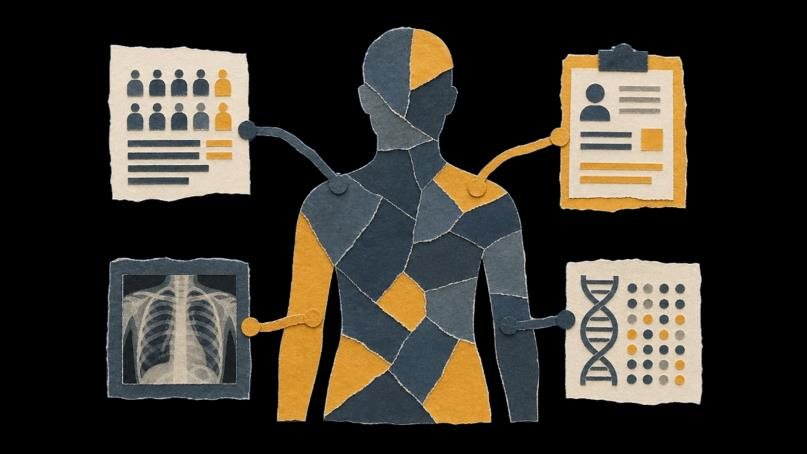
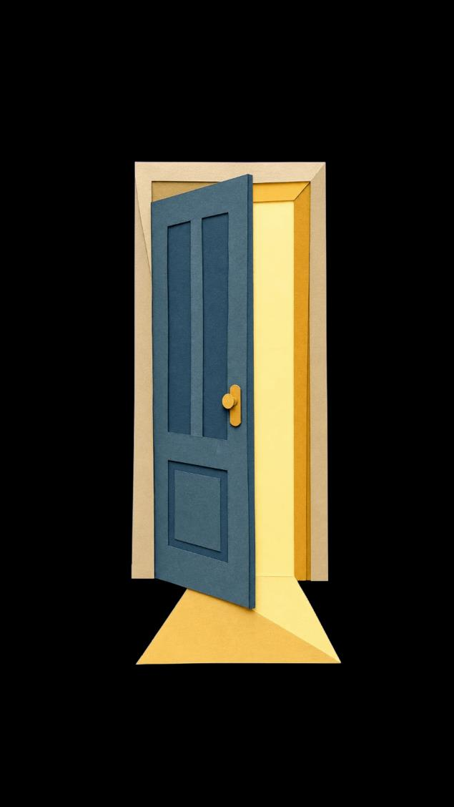
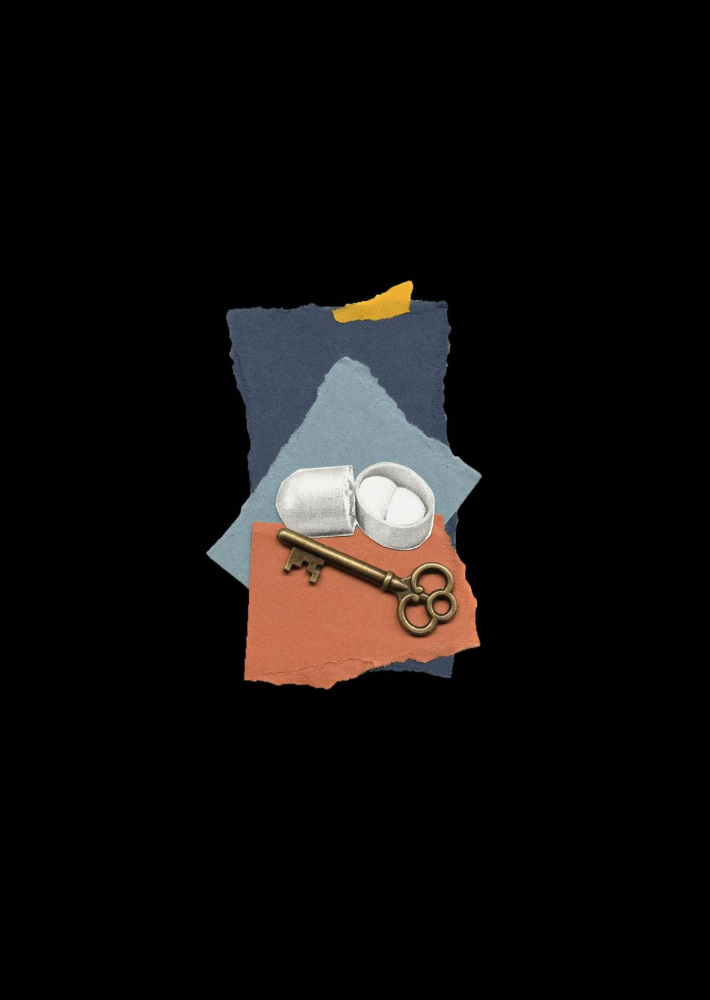
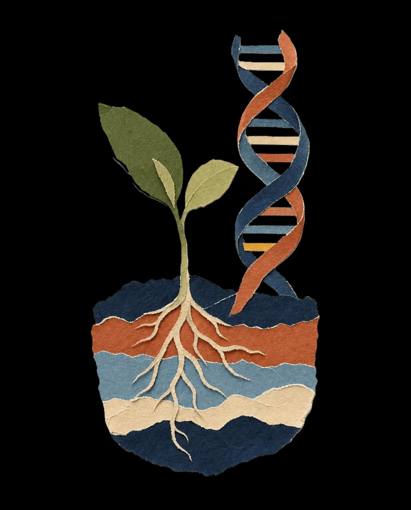
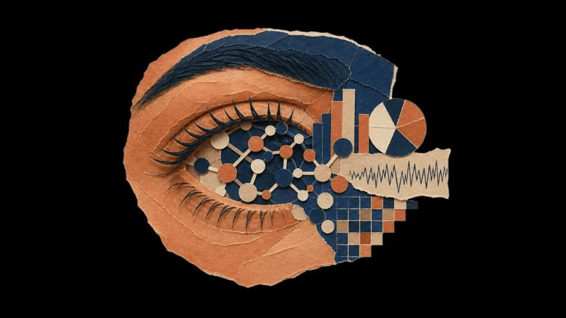

CEO Roundtable on Cancer & Project Data Sphere
Directing public health programs and pioneering initiatives focused on the development of AI foundation models in oncology.
Advancing human health through the convergence of medicine, data science, and artificial intelligence.

A physician-scientist and oncologist, internationally recognized for leveraging data science, AI, machine learning and real-world evidence to drive innovation in biomedical research.
A founding member of the FDA Oncology Center of Excellence, Dr. Khozin escaped the revolution in Iran and found his way to the United States, harmonizing his passion for patients and data into a career spanning startups, the FDA, Johnson & Johnson, and pioneering AI ventures, all while pursuing his love of music.
His work bridges the gap between cutting-edge technology and clinical care, with a focus on harnessing advanced analytics and AI to accelerate drug discovery, optimize therapeutic development, and improve patient outcomes.
Medicine, technology and AI together make the life sciences behave less like a sequence of one-off experiments and more like a learning system.
Supplies the questions and the ground truth.
Makes biology continuously measurable at the level of the individual.
Turns those measurements into models that can be interrogated, updated, and acted on.
This is the thread through Dr. Khozin’s career, from the clinic to the FDA to Johnson & Johnson, CancerLinQ, and Phyusion Bio. The current interactive Venn and its reading lists would carry over, restyled in this system.
Directing public health programs and pioneering initiatives focused on the development of AI foundation models in oncology.

Advancing innovations at the nexus of biology, technology, and AI to accelerate drug discovery and optimize therapeutic development.

Novel applications of AI and machine learning to accelerate drug discovery and optimize therapeutic development strategies.

A podcast from the CEO Roundtable on Cancer, examining the hard problems in oncology and practical solutions that connect science to patient impact.
Directing public health programs and pioneering AI foundation model initiatives in oncology.
Novel applications of AI/ML to accelerate drug discovery and optimize therapeutic development.
Led the restructuring and acquisition of the precision oncology enterprise leveraging real-world data and analytics.
Implemented data science solutions supporting the development of innovative medicines and vaccines.
Established the FDA’s first data science and technology incubator under special federal authorities.
Helped build and launch the OCE, shaping the agency’s approach to oncology drug regulation and review.
Conducted clinical research in oncology at the U.S. National Cancer Institute.
TechBio company developing telemedicine, point-of-care data visualization, and advanced analytical systems.
Board-certified oncologist. Fellowship training following internal medicine residency.
MD, University of Maryland School of Medicine. MPH, George Washington University. BS, University of Maryland.
Information Exchange and Data Transformation (INFORMED) was a public-private collaboration sandbox to de-risk innovations with transformative potential.
The effort was instrumental in establishing the foundation for the use of real-world evidence, digital health solutions, and AI/ML in drug development and regulatory decision-making.

Frameworks for integrating real-world data into regulatory decision-making.
Smart devices and decentralized clinical trials.
Foundations for AI/ML adoption across the product life cycle.
Interactive radar carries over, redrawn in ink, cobalt and baseline grey. From big data to smart data
Linear, micro, meso and macro layers, stepped through as before. INFORMED: an incubator at the US FDA
Regulatory science, clinical trial methodology and data science, focused on how evidence is generated and applied in cancer drug development.

Early-phase trials of targeted agents at the NCI, then landmark FDA approvals of ceritinib, erlotinib, osimertinib and atezolizumab.

Validated real-world endpoints, external control arms and hybrid trials that integrate randomization with external data.

Foundation models for oncology, LLM-based trial analysis, and regulatory frameworks for AI/ML across the life cycle.
An FDA meta-analysis of registration trials: primary investigator versus independent radiologist, per RECIST 1.1. Only the diagonal is agreement.
| Investigator ↓ / Radiologist → | CR | PR | SD | PD | NE | Total |
|---|
CR = complete response · PR = partial response · SD = stable disease · PD = progressive disease · NE = not evaluable. Khozin et al., FDA meta-analysis, unpublished, 2017.
Applies AI to automate and standardize tumor response assessment, producing reproducible, auditable response classifications at scale.
Replaces categorical RECIST endpoints with a continuous volumetric measure across all lesions, capturing changes that binary categories miss.
The confluence of math, music, and medicine
The composition Perpetual Drift proposes that transitions in human physiology, detectable through computational methods, can also be heard as shifts in tonality and dissonance.
A nonprofit bridging scientific discovery and clinical application in oncology through education and global collaboration.
Website →AI biotech using machine learning and federated learning to accelerate drug discovery and develop AI-powered diagnostics.
Website →Uses AI to analyze the gut microbiome, delivering actionable insights on diet and lifestyle.
Website →A Stanford spinout generating publication-grade real-world evidence in minutes using AI.
Website →Promotes the responsible development, regulation, and adoption of AI-powered healthcare solutions.
Website →Advances the ethical, effective, and equitable use of digital medicine with open-source resources.
Website →Precision oncology through functional cytometric profiling of living tumor samples.
Website →For research collaboration, speaking engagements, or work on AI-driven innovation in healthcare.